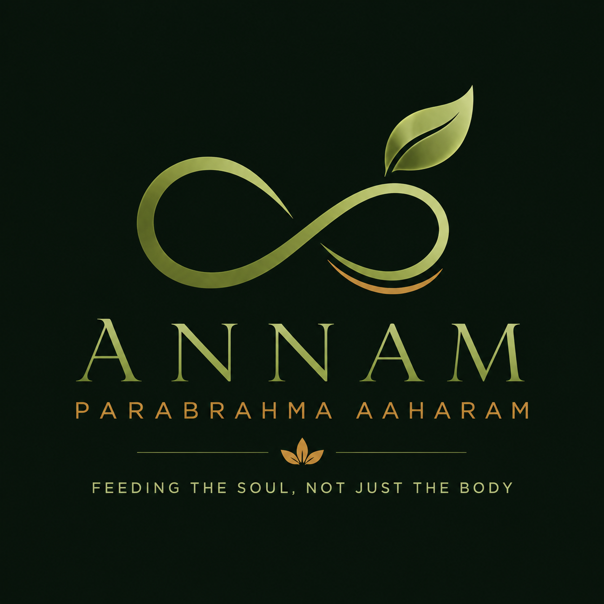

Feeding The Soul, Not Just The Body
To build a trusted ecosystem that reconnects families with natural food, traditional wisdom, sustainable living and conscious consumption while empowering farmers and local producers.
To make fresh produce, natural groceries, wood pressed oils, traditional foods and wellness products accessible through honest sourcing, quality assurance and customer trust.
📞 9347389071
Hyderabad, Telangana
Order On WhatsApp